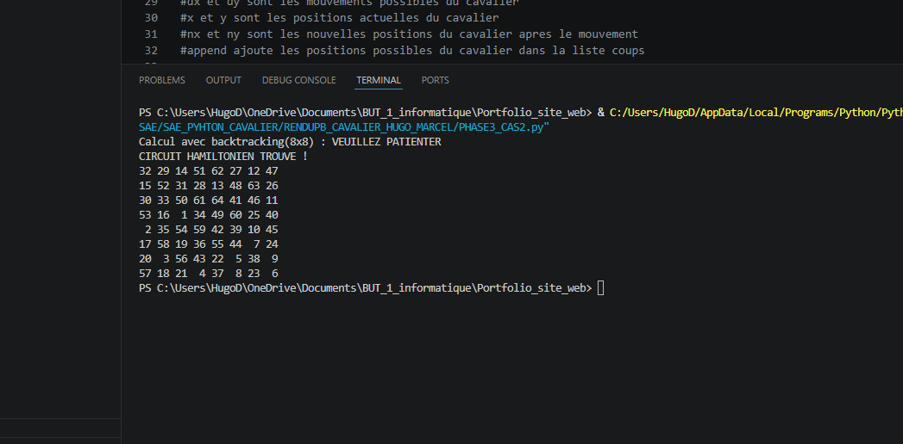
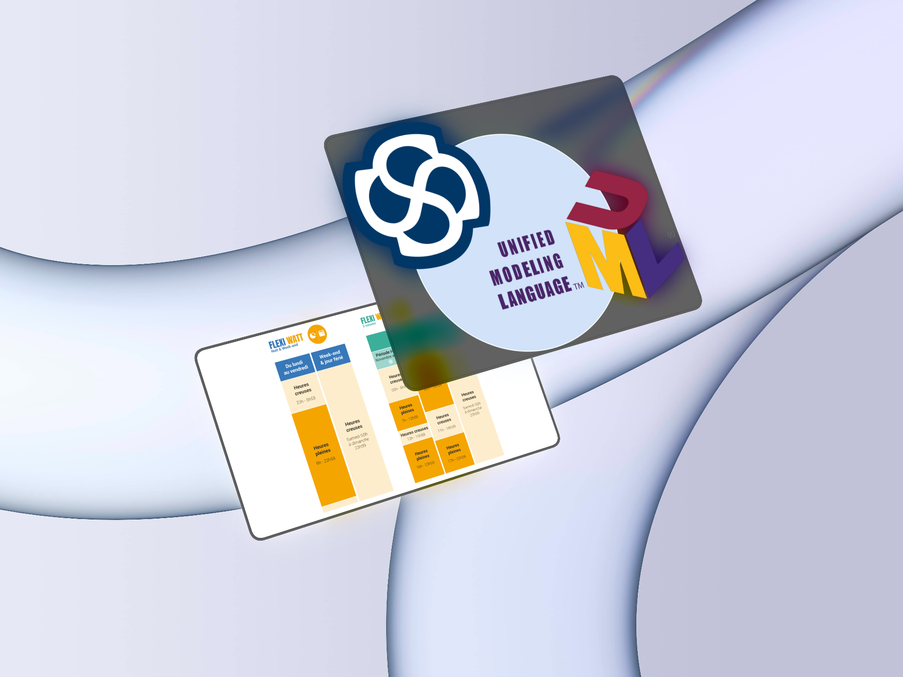
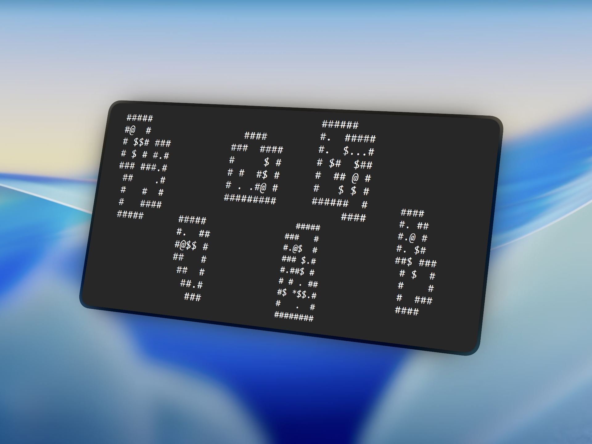
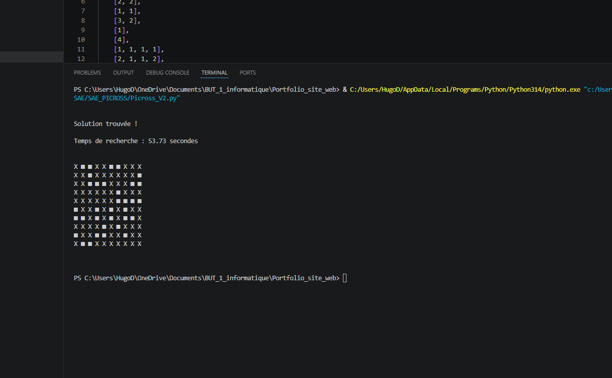

Profil & Passions
Passionné par l'informatique et le développement depuis mon parcours en Bac STI2D spécialité SIN (Systèmes d'Information et Numérique), j'apprécie particulièrement l'aspect pratique et la résolution de problèmes concrets. C'est cette envie constante de concevoir et de manipuler qui m'a naturellement orienté vers un BUT Informatique à l'IUT de Lannion.
Parallèlement à mes études, je pratique le cyclisme sur route en compétition. Cette discipline m'a apporté une grande rigueur, la gestion de l'effort et une persévérance à toute épreuve, des qualités précieuses pour mener à bien des projets numériques complexes sans jamais me décourager.






Formation
BUT Informatique
IUT de Lannion — Université de Rennes
Cette formation est assez axée sur la pratique. On apprend les bases du développement tout comme la logique de l'algorithmie, mais également le coté data avec la base de données. Elle offre un approfondissement en développement logiciel (Java, C), architecture système (Docker, Linux), modélisation de bases de données et gestion de projets diverses.
Baccalauréat STI2D
Spécialité Systèmes d'Information et Numérique (SIN)
Cette formation introduit aux concepts de la programmation, à l'électronique
numérique, au traitement de l'information et à la conception de projets
technologiques interconnectés. Elle permet de comprendre comment sont conçus les
objets, les systèmes techniques et les infrastructures qui nous entourent, tout
en intégrant les enjeux environnementaux.
Mais c'est avant tout une première révélation de mon envie d'évoluer dans le
milieu de l'informatique.
Compétences
Développées
Aperçu des compétences fondamentales acquises au cours de ma formation.
Développer des applications informatiques simples
Appréhender et construire des algorithmes
Identifier les besoins métiers des clients
Identifier ses aptitudes pour travailler en équipe
VOICI
MES
PROJETS
Je vous présente les projets que j'ai pu réaliser depuis le début de mon cursus à l'IUT de Lannion !